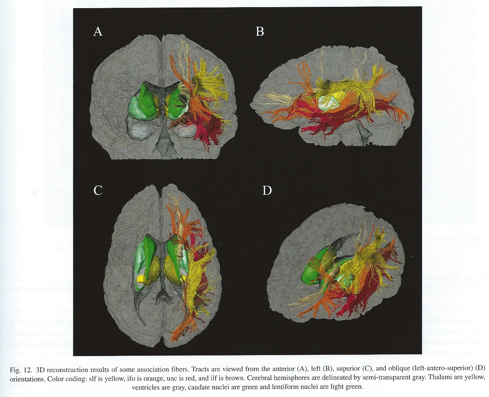

Neuroanatomy
Resources
Atlases
Harvard Brain Atlas http://www.med.harvard.edu/aanlib/cases/caseNA/pb9.htm
Allen Brain Atlas
- Human female adult (modified Brodmann): http://atlas.brain-map.org/atlas?atlas=265297126#atlas=265297126&plate=112360888&structure=10390&x=40320&y=46976&zoom=-7&resolution=124.49&z=3
- Human female adult (gyral): http://atlas.brain-map.org/atlas?atlas=138322605#atlas=138322605&plate=112360888&structure=10390&x=40320&y=46976&zoom=-7&resolution=124.49&z=3
Datasets
- OpenNeuro: https://openneuro.org
- Neurosynth (fMRI meta-analysis): http://neurosynth.org
- Table 1 from (Rahimzadeh et al., 2023)
Directional terms
- Anterior/Posterior
- Medial/Lateral
- Superior/Inferior
- Dorsal/Ventral
- Rostral/Caudal

Bipeds vs. quadripeds

Image axes
- Horizontal/Axial
- Coronal/Transverse/Frontal
- Sagittal (from the side)

Supporting structures
Skull
 - Occipital - Parietal (2x) - Temporal (2x) - Frontal
- Occipital - Parietal (2x) - Temporal (2x) - Frontal
Meninges (outside -> in)
- Dura mater (‘tough mother’)
- Arachnoid membrane
- Subarachnoid space
- Pia mater (‘gentle mother’)
- Cerebrospinal fluid (CSF) between Arachnoid membrane and Pia Mater

Ventricular system
- Also known as cerebral ventricles
- Lateral (1st & 2nd)
- Forebrain/telencephalon
- 3rd
- Diencephalon
- Cerebral aqueduct
- Midbrain
- 4th
- Hindbrain

- Ventricles filled with cerebrospinal fluid (CSF)
- CSF clears metabolites during sleep (Xie et al., 2013)?
- Blockage of CSF flow -> hydrocephalus
- Ventricles are useful landmarks for brain regions, see below
Blood Supply
- Left and right carotid arteries & basilar arterry converge in Circle of Willis
- Anterior, Middle, and Posterior Cerebral arteries main output


Blood/brain barrier
- Cells forming blood vessel walls tightly packed
- Active transport of molecules typically required


Area Postrema
- In brainstem, blood-brain barrier thin
- Chemoreceptors (chemical receptors) detect toxins, trigger emesis (vomiting) if necessary

Organization of the Nervous System

- Central Nervous System (CNS)
- Brain
- Spinal Cord
- (Everything encased in bone)
- Peripheral Nervous System (PNS)
- Somatic division
- Autonomic division
- Sympathetic
- Parasympathetic
Organization of the CNS
| Major division | Ventricular Landmark | Embryonic Division | Structure |
|---|---|---|---|
| Forebrain | Lateral | Telencephalon | Cerebral cortex |
| Basal ganglia | |||
| Hippocampus, amygdala | |||
| Third | Diencephalon | Thalamus | |
| Hypothalamus | |||
| Midbrain | Cerebral Aqueduct | Mesencephalon | Tectum, tegmentum |
| Hindbrain | 4th | Metencephalon | Cerebellum, pons |
| – | Mylencephalon | Medulla oblongata |
- Forebrain, midbrain, hindbrain terminology derives from embryonic stages in CNS development.


Hindbrain
- Structures adjacent (or caudal to) 4th ventricle
- Components
- Medulla oblongata
- Cerebellum
- Pons


Medulla oblongata
- Cardiovascular regulation
- Muscle tone
- Fibers of passage
- Ascending fibers (from body), a.k.a. afferents
- Descending fibers (exiting brain), a.k.a., efferents

Cerebellum
- “Little brain”
- Dorsal to pons
- Movement coordination, simple learning (classical conditioning)
- Largest number of neurons in the brain

Source: (floris, 2012e)
Pons
- Bulge on ventral brain stem
- Neuromodulatory nuclei
- Nucleus (anatomically discrete cluster of neurons
- Neuromodulators: neurotransmitters that modulate/alter function of other neurons
- e.g., Serotonin (5-HT), norepinephrine (NE), acetylcholine (ACh), dopamine (DA)
- Relay to cerebellum
Midbrain
- Tectum (roof), dorsal
- Tegmentum (floor), ventral

Tectum
- “Roof” of the midbrain
- Superior and inferior colliculus (colliculi is plural for ‘little hill’)
- Superior colliculus: Reflexive orienting of eyes, head, ears (superior colliculi)
- Input from FEF, parietal lobe
- Output to cranial nerve nuclei (III, IV, VI) in tegmentum, pons
- Inferior colliculus: Auditory processing (from brainstem to auditory thalamus)


Tegmentum
- “Floor” of the midbrain
- Species-typical movement sequences
- Neuromodulatory nuclei release NTs
- Norepinephrine (NE)
- Serotonin (5-HT)
- Dopamine (DA) – from ventral tegmental area (VTA)

Forebrain
- Diencephalon
- Telencephalon

Diencephalon (‘between brain’)
- Thalamus
- Hypothalamus

Thalamus
- Input to cortex
- Functionally distinct nuclei
- Lateral geniculate nucleus (LGN), vision
- Medial geniculate nucleus (MGN), audition
- Pulvinar, attention?

Hypothalamus
- Five Fs: fighting, fleeing/freezing, feeding, and reproduction
- Controls pituitary gland (“master” gland)
- Anterior pituitary (indirect release of hormones)
- e.g., Corticotropin Releasing Hormone (CRH) -> release of cortisol from Adrenal Cortex (adjacent to kidney)
- Posterior pituitary (direct release of hormones)
- Oxytocin
- Vasopressin (aka, Arginine Vasopressin – AVP; Anti-diuretic Hormone – ADH)
- Anterior pituitary (indirect release of hormones)


Telencephalon
- Basal ganglia
- Hippocampus, amygdala
- Cerebral cortex
Basal Ganglia
- Skill and habit learning
- Linked to Tourette Syndrome, Obsessive-Compulsive Disorder (OCD), addiction, movement disorders (e.g., Parkinson’s Disease)
- Striatum
- Caudate nucleus
- Putamen
- Globus pallidus
- Subthalamic nucleus
- Substantia nigra (tegmentum)

Hippocampus
- Hippocampus means “sea horse”

- Medial to lateral ventricles
- Store memories of specific facts (semantic memory) or events (episodic memory)
- Place memory in non-human animals (& humans?)
- Fornix (axon fiber bundle) projects to (mammillary bodies of) hypothalamus

Amygdala (“almond”)
- Physiological state, behavioral readiness, affect
- NOT the fear center! (LeDoux, 2015).
- Projection to hypothalamus

Cerebral Cortex
- Cerebral hemispheres
- Groove (sulcus or sulci)
- Bumps (gyrus or gyri)
- Grey vs. white matter
- Lobes
Lateral view

Medial view

Nissl stain
- Stains cell bodies
- LGd is the lateral geniculate nucleus of the thalamus
- Circled area is the hippocampus
- Ins is the insula

Lobes of the cerebral cortex
- Frontal
- Temporal
- Parietal
- Occipital
- Names derive from underlying bones of the skull


Longitudinal fissure
- Also known as superior longitudinal fissure
- Divides the cerebral hemispheres

Lateral sulcus/fissure
- Also known as Sylvian Fissure
- Divides frontal from temporal lobe

Central sulcus
- Also known as Rolandic Fissure or Fissure of Rolando
- Divides frontal from parietal lobe

Frontal lobe
- Anterior to central sulcus
- Superior to lateral fissure
- Dorsal to temporal lobe

- Primary motor cortex (M-I or M1)
- Precentral gyrus

- Secondary motor areas
- Supplementary motor cortex (SMC)
- Frontal eye fields (FEF)
- Prefrontal cortex
- Planning, problem solving, working memory…?
- Components of olfactory system

- Basal forebrain
- Nucleus accumbens (NAcc), part of ventral striatum
Cingulate Gyrus

Inferior Frontal Gyrus (IFG)

- Home to Broca’s Area
Middle Frontal Gyrus (MFG)

- Home to Dorsolateral Prefrontal Cortex (DLPFC)
Superior Frontal Gyrus (SFG)
- Brodmann Area 8
- Frontal Eye Fields (FEF)
- Laughter and self-awareness?

Temporal lobe
- Ventral to frontal, parietal lobes
- Inferior to lateral fissure

- Primary auditory cortex (A-I or A1)

Superior Temporal Gyrus

- Neurons sensitive to objects, faces; biological motion processing
- Language processing
Inferior Temporal Gyrus (ITG)

- Continuation of ventral visual processing stream

Entorhinal (ER) & Parahippocampal Cortex

- Storage of memories about events, objects
- Amygdala, hippocampus
Parietal lobe
- Caudal to frontal lobe
- Dorsal to temporal lobe
- Posterior to central sulcus
- Primary somatosensory cortex (S-I or S1)
- information from sensors in skin, muscles, tendons, joints and viscera
- Post-central gyrus

- Perception of spatial relations, action planning
Inferior Parietal Lobule
 - e.g., language, mathematical operations, body image, etc.
- e.g., language, mathematical operations, body image, etc.
Superior Parietal Lobule

- damage to can cause spatial hemi-neglect

Occipital lobe
- Caudal to parietal & temporal lobes
- Primary visual cortex (V1)
- Secondary visual areas (V2…V7)
Insular cortex (insula)
- medial to temporal lobe
- deep inside lateral fissure

- Primary gustatory cortex
- Self-awareness, interpersonal experiences, motor control, interoception

Brodmann Areas

- Cytoarchitectonic (cellular architecture) differences in cerebral cortex
- Numbered areas, e.g. V1 == Area 17 or BA 17


White matter pathways
- Brainstem
- Projection fibers
- Association fibers
- Commissural fibers

Brainstem projections
- Corticospinal tract (descending/efferent)
- Dorsal column/medial lemniscus (ascending/afferent)
- Superior/inferior cerebellar peduncles (from/to cerebellum)

Projection fiber tracts
- Internal capsule
- Thalamic radiation
- Cortico-{pontine, bulbar, reticular} tracts

Cortical white matter tracts
- Superior/inferior longitudinal fasciculus
- Arcuate fasciculus part of sup. long. f.
- Superior/inferior fronto-occipital fasciculus
- Cingulum, fornix (hyp-hip), stria terminalis (hyp-amyg)
Commissural fibers
- Corpus callosum
- Anterior commissure (AC)
- Posterior commissure (PC)


Anterior, Posterior Commissures

Spinal cord
- Spinal column w/ vertebrae
- Moving rostral -> caudal…
- Cervical (8), thoracic (12), lumbar (5), sacral (5), coccygeal (1)
- Spinal segments & 31 nerve pairs
- Cauda equina

- Spinal segments (rostral to caudal) ennervate specific body segments
- When focusing on the skin, these are called dermatomes

- Dorsal/Ventral
- Dorsal root (sensory)
- Ventral root (mostly motor)
- Grey (interior) vs. white matter (exterior)
- Cerebral cortex opposite (grey exterior, white interior)


Organization of the PNS
- Somatic division
- Autonomic division (Autonomic Nervous System)
Somatic division
Cranial nerves
- Afferents (input), efferents (output), or mixed
- Innervate head and neck
- Olfactory (I), optic (II), (VIII) auditory, vagus (X), etc.
- Spinal nerves

Spinal nerves
Autonomic nervous system
- CNS & PNS components
- Controls “vegetative functions”
- Limited voluntary control
- Three divisions
- Sympathetic
- Parasympathetic
- Enteric (gut, intestinal tract)

- Bipolar (continuum) vs. bivariate autonomic space (Berntson, Cacioppo, & Quigley, 1991)

Sympathetic division
- Prepares body for action
- “Fight or flight”
- Spinal cord
- ganglion chain along spinal column to End organs
- Neurotransmitters (NTs)
- Preganglionic: acetylcholine (ACh)
- Post: norepinephrine (NE)
Parasympathetic division
- “Around” sympathetic
- Restorative function
- “Rest & digest”
- Spinal cord (or Vagus n. from Xth cranial n.) -> ganglia near end organs -> end organ
- NT: ACh
Illustrative measures of ANS function
- Heart rate variability

- Galvanic skin response (GSR)
- Pupillary response

- electrogastrogram (EGG) for ENS (Al Taee & Al-Jumaily, 2020)

References
Abbott, N. J., Rönnbäck, L., & Hansson, E. (2006). Astrocyte-endothelial interactions at the blood-brain barrier. Nature Reviews. Neuroscience, 7(1), 41–53. https://doi.org/10.1038/nrn1824
Al Taee, A., & Al-Jumaily, A. (2020). Electrogastrogram based medical applications an overview and processing frame work. In Hybrid intelligent systems (pp. 511–520). Springer International Publishing. https://doi.org/10.1007/978-3-030-14347-3\_50
Begg, D. P., & Woods, S. C. (2013). The endocrinology of food intake. Nature Reviews. Endocrinology, 9(10), 584–597. https://doi.org/10.1038/nrendo.2013.136
Berntson, G. G., Cacioppo, J. T., & Quigley, K. S. (1991). Autonomic determinism: The modes of autonomic control, the doctrine of autonomic space, and the laws of autonomic constraint. Psychological Review, 98(4), 459–487. https://doi.org/10.1037/0033-295X.98.4.459
floris. (2012a, August). 3D brain from MRI 4 basal ganglia. Youtube. Retrieved from https://www.youtube.com/watch?v=q7z-373pwuI
floris. (2012b, August). 3D brain from MRI 6 amygdala. Youtube. Retrieved from https://www.youtube.com/watch?v=YB9rs4tEAaE
floris. (2012c, August). 3D brain from MRI 7 hippocampus. Youtube. Retrieved from https://www.youtube.com/watch?v=wjvDDH-uJ0s
floris. (2012d, August). 3D brain from MRI 8 brain stem. YouTube. Retrieved from https://www.youtube.com/watch?v=Wq8EVQUc9a4
floris. (2012e, August). 3D brain from MRI 9 cerebellum. Youtube. Retrieved from https://www.youtube.com/watch?v=6szEeD0n-oU
LeDoux, J. (2015, August 10). The Amygdala Is NOT the Brain’s Fear Center. Psychology Today. Retrieved from https://www.psychologytoday.com/blog/i-got-mind-tell-you/201508/the-amygdala-is-not-the-brains-fear-center
Namkung, H., Kim, S.-H., & Sawa, A. (2017). The insula: An underestimated brain area in clinical neuroscience, psychiatry, and neurology. Trends in Neurosciences, 40(4), 200–207. https://doi.org/10.1016/j.tins.2017.02.002
Oishi, K., Faria, A. V., Zijl, P. C. van, & Mori, S. (2010). MRI atlas of human white matter. Academic Press.
Rahimzadeh, V., Jones, K. M., Majumder, M. A., Kahana, M. J., Rutishauser, U., Williams, Z. M., … NIH Research Opportunities in Humans (ROH) Consortium. (2023). Benefits of sharing neurophysiology data from the BRAIN initiative research opportunities in humans consortium. Neuron, 111(23), 3710–3715. https://doi.org/10.1016/j.neuron.2023.09.029
Saive, A.-L., Royet, J.-P., & Plailly, J. (2014). A review on the neural bases of episodic odor memory: From laboratory-based to autobiographical approaches. Frontiers in Behavioral Neuroscience, 8, 240. https://doi.org/10.3389/fnbeh.2014.00240
Xie, L., Kang, H., Xu, Q., Chen, M. J., Liao, Y., Thiyagarajan, M., et al.others. (2013). Sleep drives metabolite clearance from the adult brain. Science, 342(6156), 373–377. https://doi.org/10.1126/science.1241224